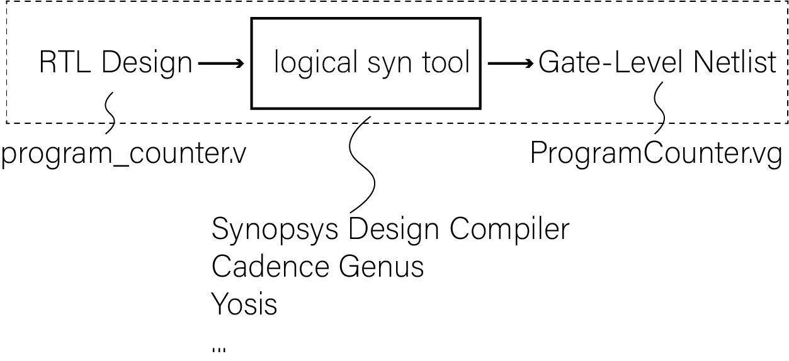
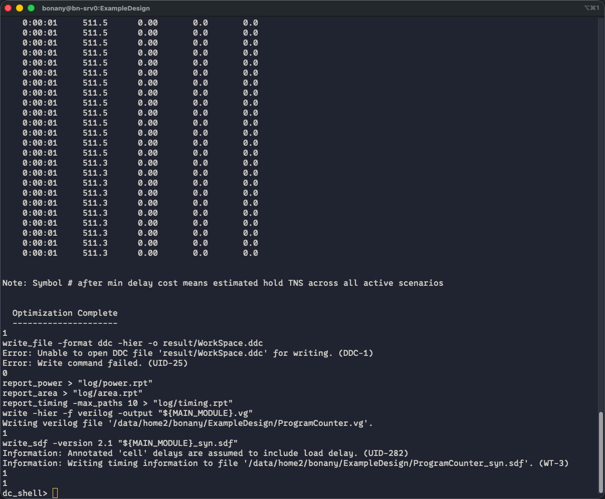
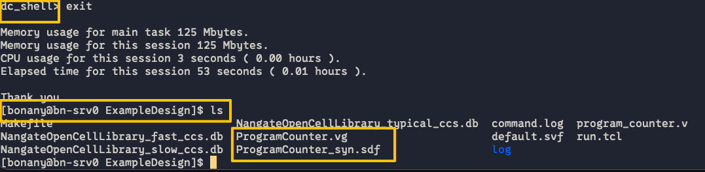
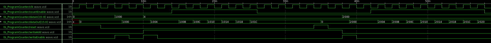
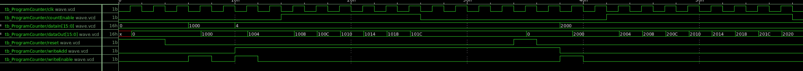

实验7、初识逻辑综合
教程
逻辑综合（logical synthesis）主要将Register-Transfer-Level (RTL)级的硬件描述语言代码转换为结构化表示。如下面的可综合的Verilog HDL写的可配置记数器在逻辑综合前（RTL）与逻辑综合后（gate-level netlist）的形式分别为【先看一眼logical syn大概是在干啥，后面我们一步一步跟着做一下】：
Note
可配置记数器（programable counter）指的是记数器除了正常向上记数功能外，还可以进入一个额外的“设置”模式，直接把内部DFF的Q端设置成为某数值。

上图中Pre-syn RTL code
program_counter.v上图中Post-syn gate-level netlist（由Cadence Genus工具进行逻辑综合的）
ProgramCounter.vg
下面我们分三步完成上述逻辑综合工作：
第一步：远程连接我们的CLAB主机服务器
先完成Lab0中的创建CLAB虚拟主机步骤，然后：
打开https://rdv2.lcpu.dev,用自己CLAB虚拟主机的账户和密码登录。打开虚拟主机里的Terminal.
第二步：复制NFS上的ExampleDesign到自己主机工作目录下
cd ~
cp -r /mnt/nfs/ExampleDeign-15nm.tar.gz ./
tar -zxvf ExampleDesign-15nm.tar.gz
cd ExampleDesign-15nm
可以看到以下几个文件夹：
rtl: RTL设计文件
syn: 逻辑综合
testbench: 测试用例
pdk: 逻辑综合所使用的标准单元库
第三步：在服务器上进行逻辑综合
我们用Synopsys的Design Compiler (简称DC)工具进行逻辑综合
然后执行以下命令以使用dc_shell-t来运行run.tcl脚本，run.tcl内部已经写好了它会使用同文件夹下的.db标准单元库进行逻辑综合，为program_counter.v生成gate-level netlist：
cd syn
dc_shell-t -f run.tcl
注意：这里我其实写了个Makefile，可以直接用make来进行综合，用make clean来清理工作目录下的所有生成的文件。
稍等几分钟，因为这个例子代表已经验证过没有问题，所以应该可以跑出来：

现在以“dc_shell>”开头说明是在dc workspace下，输入exit退出到bash shell环境下，会发现多了几个文件：

ProgramCounter.vg: 生成的gate-level netlist
ProgramCounter.sdf: 生成的gate-level netlist里的timing信息
log/*.rpt: 这个是我们综合出来的报告 (reports)
Pre-和Post-Syn仿真
Pre-Syn仿真就是用testbench.v去include RTL design file（如本例中为program_counter.v）即可。
而Post-Syn仿真也很简单，与pre-syn simulation唯“三”不同的地方就是：
`include ProgramCounter.vg替代`include program_counter.vProgramCounter.vg里引用了PDK的标准库的基础门电路单元，比如aoi (aoi是and-or-inverter的简称，表达式为c=~(a & b | c))、and2等等，因此必须再include上pdk标准单元库的门电路行为模型，我们本次用的openpdk-15nm的Verilog行业模型在
PDK文件夹/front_end/verilog/NanGate_15nm_OCL_conditional.v，所以要在module外面加上：`include "/home/opt/pdk/nangate15nm/front_end/verilog/NanGate_15nm_OCL_conditional.v"
在testbench.v里testbench module内部增加一块代码：
initial $sdf_annotate("具体路径/ProgramCounter_syn.sdf");
Warning
在跑上面的程序时，一定要注意路径，问一下include的东西simulator是否能找到。
我准备了一版运行vcs来跑仿真的代码，分别在 前仿（综合前仿真）：
cd ~/ExampleDesign-15nm/testbench/pre-syn/
source run_vcs_bash.sh
后仿（综合后仿真）：
cd ~/ExampleDesign-15nm/testbench/post-syn/
source run_vcs_bash.sh
建议大家对比testbench/pre-syn/run_vcs_bash.sh与testbench/post-syn/run_vcs_bash.sh、testbench/pre-syn/testbench.v和testbench/post-syn/testbench.v的区别。
下面给一下为师我跑的带标记的波形图：
pre-syn simulation results:

post-syn simulation results:

post-syn仿真验证功能通过:D
注意：生成的PPA报告在syn/log里。
练习
Note
[问题1] 请对于实验四中自己设计的交通灯控制器进行逻辑综合，并进行综合后仿真验证（post-synthesis simulation，或者称为post-syn simulation）。请在报告中提交：（1）带标记的波形图（pre-与post-syn仿真的）功能验证（2）通过查看综合报告（synthesis report）参数填写附表1（见下方）。
附表1：
Specs |
Unit |
Value |
|---|---|---|
Fastest Working Frequency |
Hz |
|
Power |
W |
|
Cell Number |
1 |
|
Area |
um^2 |
注：Fastest Working Frequency = 1 / (设置的working period - slack)